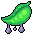

| Icon | Name | Description |
|---|---|---|
| change gender | A character cursed with change gender changes its gender |
| infertility | A character cursed with infertility can't have children | |
| gluttony | A character cursed with gluttony requires more food to sustain itself | |
|  | pox | Pox is a sexually transmittable disease which causes the afflicted person to require more water to function |